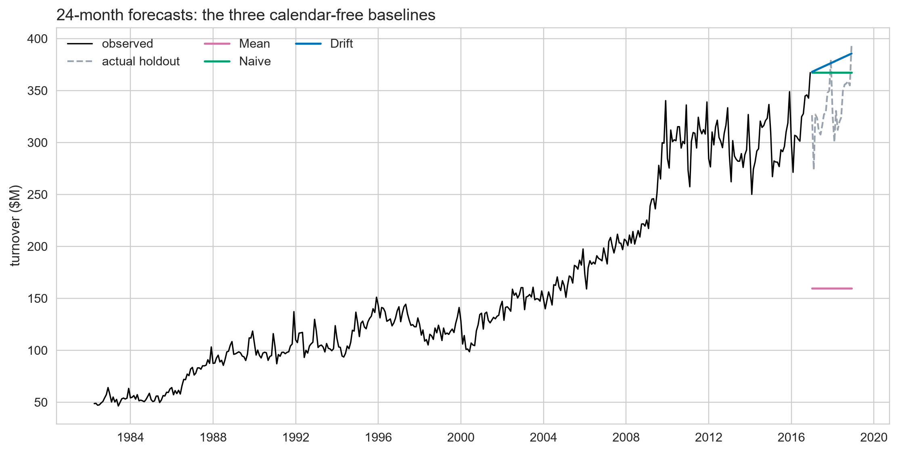
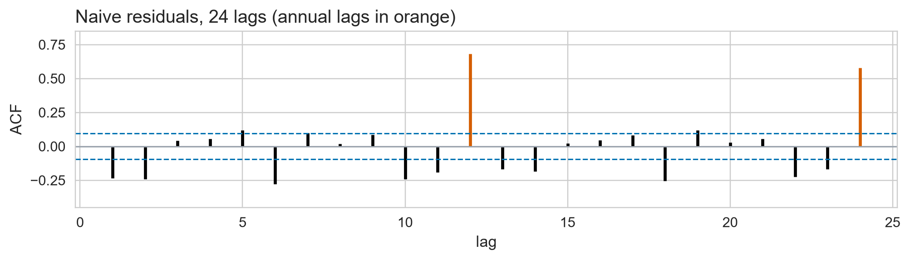
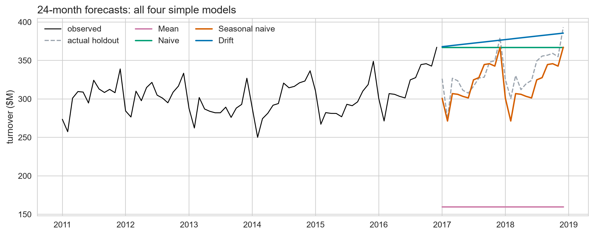
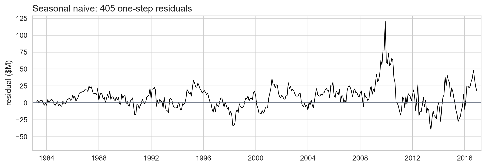
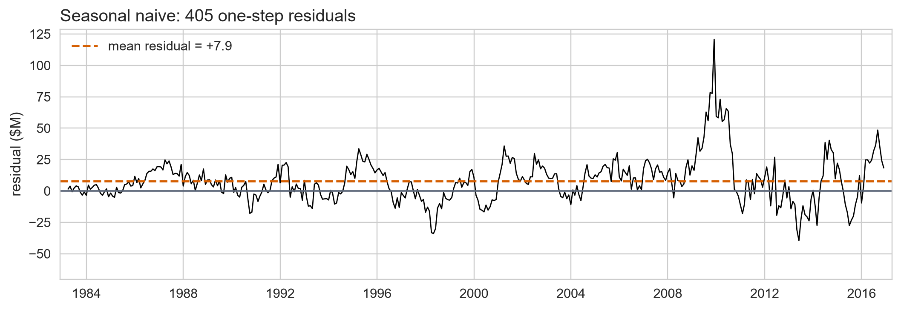
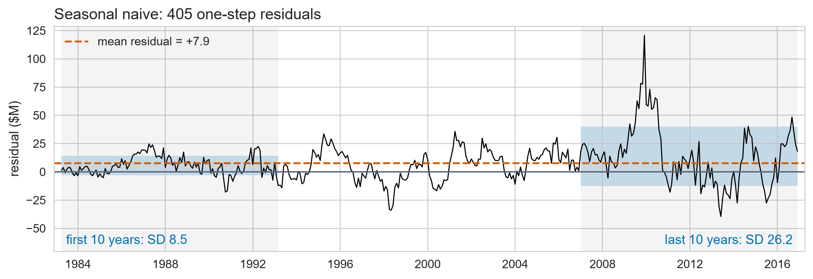
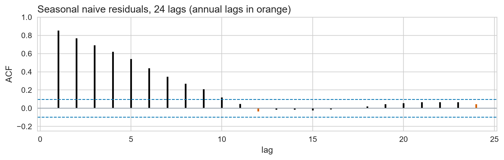
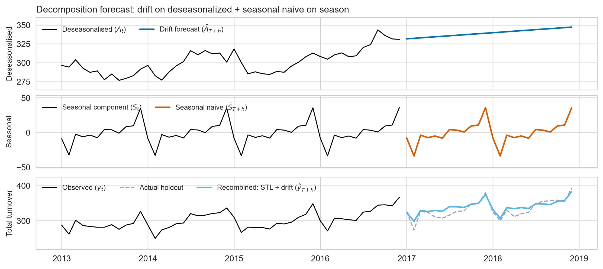
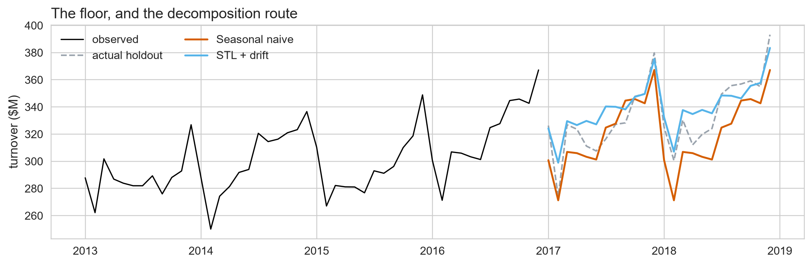
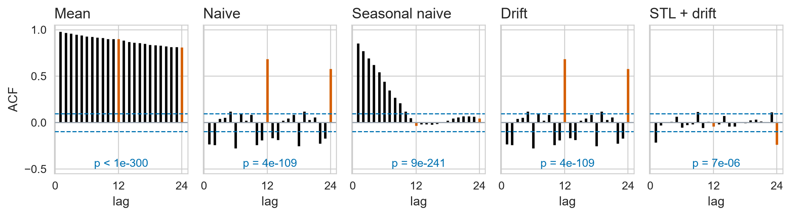

Benchmarks & Residuals
Day 2 · Lecture 1 · fpppy Ch 5.1–5.4, 5.7
2026-09-06
The Day 2 plan
Day 1 found that seasonality separates retail series, not trend. Today we build the floor a model must beat, and the way to prove a forecast is real.
- Five models, each one answering what the last one’s errors gave away
- Residual diagnostics: the instrument that names the missing term
- Then the two lectures after this one: intervals, then scores
A forecast without a range is half an answer
The next lecture is all about that range.
A. Four simple models set the floor
Ch 5.1-5.4 · Fit one, diagnose it, let the fault name the next
Every chart today is drawn from one retail series
- Monthly retail sales in Victoria, Australia, in millions of dollars
- 441 months, April 1982 to December 2018, no gaps and no missing values
The last 24 months are held out, and never shuffled

- Split in time, never at random: a shuffle trains on 2018 to predict 2017
- \(h = 24\) came from the decision, not from the data: a two-year plan needs two years
train, test = D.train_test(spine, h=24)
Every formula here is built from four symbols
| Symbol | Meaning |
|---|---|
| \(T\) | the forecast origin, the last observed time |
| \(h\) | the forecast horizon, steps ahead |
| \(m\) | the seasonal period, 12 for monthly data |
| \(\hat{y}_{a\mid b}\) | the forecast of time \(a\), made from data up to time \(b\) |
The origin stays at \(T\) all segment, so we drop the bar and write \(\hat{y}_{T+h}\). It comes back whenever the origin moves.
Three baselines start by ignoring the calendar
The mean. Average everything, use it for every horizon:
\[\hat{y}_{T+h} = \bar{y} = \frac{1}{T}\sum_{t=1}^{T} y_t\]
The naive. Take the last observation, use it for every horizon:
\[\hat{y}_{T+h} = y_T\]
The drift. The naive, tilted by the line through the first and last point:
\[\hat{y}_{T+h} = y_T + \dfrac{h}{T-1}(y_T - y_1)\]
Two of the three at least start in the right place

Residuals flatter, forecast errors do not
Residual (\(e_t\)): one-step error on training data
\[e_t = y_t - \hat{y}_{t|t-1}\]
Residuals (\(e_t\))
In-sample training errors
Flattering to the model
Forecast Errors (\(e_{T+h}\))
Out-of-sample holdout errors
Honest evidence
Naive: \(e_t = y_t - y_{t-1}\), the raw one-step change.
The naive’s errors still know what month it is

- Lags 12 and 24 (orange) stand at 0.68 and 0.58, against a bound of 0.10
- Day 1 named that shape: a spike every \(m\) lags is seasonality, still in there
Drift fixes the mean and nothing else

- Drift’s residual is the naive’s, less the constant slope 0.77: same spread, same every lag
- Mean residual moves from +0.77 to +0.00, and lags 12 and 24 do not move at all
- A trend term fixed the bias. It could not fix a fault that was never about trend
The seasonal naive repeats last year’s same month
\[\hat{y}_{T+h} = y_{T+h-m(k+1)}, \qquad k = \left\lfloor \frac{h-1}{m} \right\rfloor\]
Monthly data, so \(m = 12\): one seasonal cycle is one year.
- \(k+1\) is how many seasonal cycles back the forecast reaches
- \(h = 1 \dots 12\): \(k = 0\), so it copies last year’s same month
- \(h = 13 \dots 24\): \(k = 1\), so it steps back a second year
The next lecture’s staircase is built on this \(k\): flat within each block of \(m = 12\) months, one step up per seasonal cycle.
All four simple models, and the floor they set

Objective evidence: what proves a complex model adds value.
Fit four models at once in code
from statsforecast import StatsForecast
from statsforecast.models import (HistoricAverage, Naive,
SeasonalNaive, RandomWalkWithDrift)
sf = StatsForecast(models=[HistoricAverage(), Naive(),
SeasonalNaive(season_length=12),
RandomWalkWithDrift()], freq=D.FREQ)
fc = sf.forecast(df=train, h=H, level=[80, 95], fitted=True)
fv = sf.forecast_fitted_values() # the residuals we just readThe winner’s residuals sit high and fan out



- The dashed line is the mean, +7.9: 68% of the errors sit above zero
- Each box is a decade’s typical miss: 8.5, then 26.2, 3x as tall
The season is gone, but the decay is not

- Lags 12 and 24 (orange) now fall inside the bounds at -0.03 and +0.04
- The orange spikes the naive had are gone: the calendar term worked
- What is left decays smoothly from 0.85. Day 1 named that shape too: trend
B. One model with both terms
Ch 5.7, 5.4 · The decomposition route, and the verdict on all five
Decomposition is also a forecasting method
1 · STL splits the series, and the three parts group into two:
\[y_t = \underbrace{T_t + R_t}_{A_t,\;\text{seasonally adjusted}} + \underbrace{S_t}_{\text{season}}\]
2 · Forecast each part with the simple model that suits it:
\[\underbrace{\hat{A}_{T+h} = A_T + \frac{h}{T-1}(A_T - A_1)}_{\text{drift}} \qquad \underbrace{\hat{S}_{T+h} = S_{T+h-m(k+1)}}_{\text{seasonal naive}}\]
3 · Add them back:
\[\hat{y}_{T+h} = \hat{A}_{T+h} + \hat{S}_{T+h}\]
MSTL(season_length=12, trend_forecaster=RandomWalkWithDrift()) runs all three steps in one call.
STL’s two parts forecast separately, then add

On this window, the decomposition route clears the floor

The seasonal naive repeats last year’s level; STL lets drift carry the growth.
Ljung-Box turns 24 lag checks into one test
\(H_0\): the first \(\ell = 24\) residual autocorrelations are all zero.
\[Q = T(T+2)\sum_{k=1}^{\ell}\frac{r_k^2}{T-k} \qquad Q \sim \chi^2_{\ell-K} \; \text{ under } H_0\]
\(r_k\): the lag-\(k\) autocorrelation · \(K\): parameters estimated, 0 here · \(p\): how often a \(Q\) this large would happen if \(H_0\) were true
- \(p < 0.05\): autocorrelation is real \(\rightarrow\) model is not finished
- \(p \ge 0.05\): residuals are indistinguishable from white noise
Every baseline fails, and they fail differently

- Every \(p\) is far below 0.05: not one of the five is finished
- Read the shapes, not the \(p\): annual spikes mean a missing season, decay means a missing trend
- STL + drift halves the spread, 12.7 to 6.5, and still fails: see lag 24
- The residual checklist is four: uncorrelated · zero mean · constant variance · normal
\(\rightarrow\) Lab C · The benchmark floor
Open labs/02_day2_toolbox_and_evaluation.ipynb
| 2.1 | The benchmark floor | 15 min |
| 2.2 | Are the residuals white noise? | 10 min |
25 minutes. The notebook carries the instructions; work down it in order.
Stop at the end of 2.2. Exercise 2.3 is intervals, and it belongs to the next lecture.
The floor is set, and nothing is white noise
- Start with baselines, then let each residual check name the next model
- The seasonal naive is the number to beat; the decomposition route is its only rival
- Residuals should be uncorrelated and zero-mean, and not one of the five is
Next: prediction intervals. The Gaussian formula, why it fails here, and two repairs.